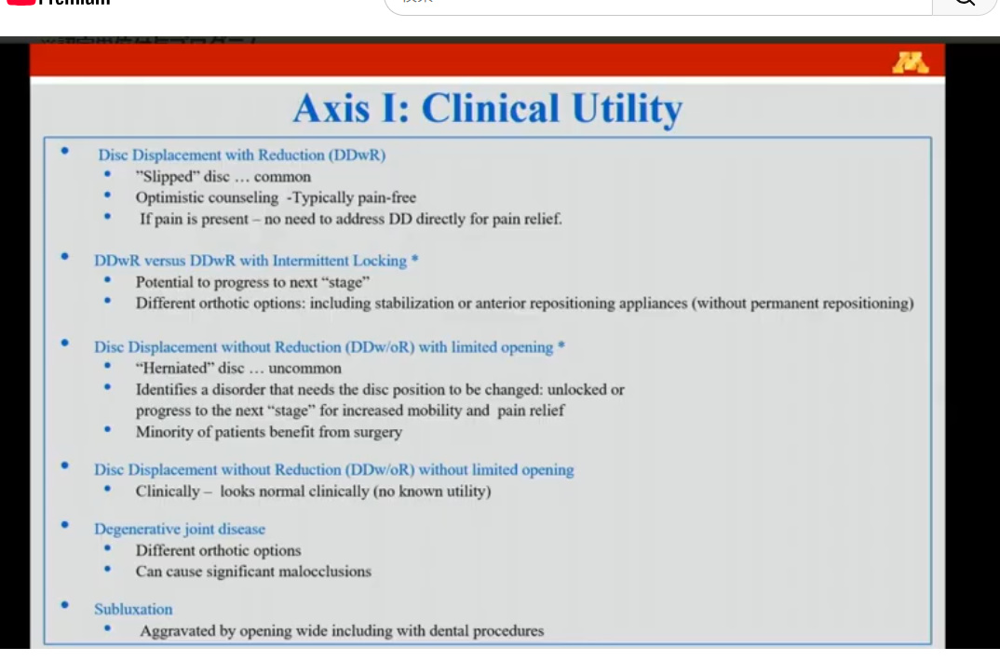

― Axis I の診断精度から、Axis II による予後予測、そして「フラグ」による患者トリアージまで ―
疼痛性疾患(筋痛・関節痛・関連痛を伴う筋筋膜痛)は感度0.86以上・特異度0.98以上と極めて良好。一方、関節内障の多くは臨床所見だけでは診断精度が不足し、画像(MRI/CT)が基準となる。
妥当性=検査がどれだけ正確か。臨床的有用性=その検査が介入を促し、健康アウトカムを改善するか。演者は「役に立たなければ意味がない」と全編を通じて主張。
米国6地域の一般歯科・専門医 185名、患者1,911名の前向き研究。6か月後の不良転帰は47%。ベースラインの心理的苦痛への対処困難、高い痛み強度、広汎痛などが強力な予測因子だった。
赤(身体的緊急/医科紹介)・橙(メンタルヘルス紹介)・黄(予後不良リスク)・緑(そのまま進めてよい)。フラグの数と色で単純症例か複雑症例かをトリアージする。
PBRNの要請で「患者が10分以内に記入できる」ことが必須条件。研究では大成功したDC/TMDが臨床でほぼ使われていない現状を、簡略版で打開したいというのが演者の悲願。
疼痛治療にはどれも20〜60%のプラセボ(非特異的)効果がある。落ち着いて話を聴き、共感を示すこと自体が治療成績を左右する、というのが最後のメッセージ。
演者は冒頭で、2014年に世界中の専門家を招集し、その意見を統合して顎関節症の診断基準(DC/TMD:Diagnostic Criteria for Temporomandibular Disorders)を作成したと述べています。この作業には最終的に34名もの著者が名を連ねました。後のQ&A(Q2)で明かされるように、これには「専門知を集める」という学術的な目的と、「名前を載せてしまえば後から反対しにくい」という政治的な目的の両方があった、というのが演者の率直な述懐です。
DC/TMD は前身である RDC/TMD(Dworkin & LeResche, 1992)を踏襲し、二軸構造をとります。この「身体診断」と「心理社会的評価」を必ずセットで行うという設計思想こそが、DC/TMD の本質です。
A. 疼痛性疾患
B. 関節内・関節外疾患
演者はこれを「Axis 2 こそ目を通す価値がある」と強調し、講演の後半すべてをこれに費やしました。
演者は本題に入る前に、聴衆と用語の定義を揃えます。診断精度(diagnostic accuracy)は「妥当性(validity)」とも呼ばれるものです。
| 疾患が実際にある | 疾患が実際にない | |
|---|---|---|
| 診断基準が「陽性」 | 真陽性(TP) 正しく病気を捉えた |
偽陽性(FP) 過剰診断 |
| 診断基準が「陰性」 | 偽陰性(FN) 見逃し |
真陰性(TN) 正しく否定できた |
| 指標 | 感度 = TP /(TP+FN) 「病気がある人を、あると言えるか」 |
特異度 = TN /(TN+FP) 「病気がない人を、ないと言えるか」 |
Dworkin と LeResche が RDC/TMD を作った際に設定した目標値は 感度 ≧ 0.70、特異度 ≧ 0.95 でした。演者はこの非対称性の理由を明快に説明します。
演者は「全員の認識を揃えるために」として、筋痛を例に診断アルゴリズムを解説しました。これは他の疼痛性疾患にもそのまま応用できる思考の型です。
DC/TMD の中核をなす概念です。触診で「痛い」だけでは不十分で、それが患者が主訴として訴えている痛みと同じ性質・同じ場所の痛みであることが要求されます。単なる圧痛は健常者でも生じるため、この一段階を入れることで特異度が劇的に向上します。
演者の説明:「このように診断すれば、あると診断したときの90%は正しく、ないと判定したときの99%は正しい。非常に良い感度・特異度である。」
| 診断名 | 感度 | 特異度 | 評価 | 臨床的な読み方 |
|---|---|---|---|---|
| 筋痛 Myalgia | 0.90 | 0.99 | 目標達成 | 陽性でも陰性でも高い確度で信頼できる |
| 関連痛を伴う筋筋膜痛 Myofascial pain with referral | 0.86 | 0.98 | 目標達成 | 触診による関連痛の誘発が鍵 |
| 関節痛 Arthralgia | 0.89 | 0.98 | 目標達成 | TMJ触診・運動時の familiar pain |
| TMDに起因する頭痛 Headache attributed to TMD | 0.89 | 0.87 | 特異度やや低い | 演者いわく「『頭痛はTMDと無関係だ』と言ったとき、13%は間違える。悪くはない」 |
※TMDに起因する頭痛の診断には、前提として筋痛または関節痛の一次診断が必要です(側頭部の頭痛が顎運動で修飾され、側頭筋の触診や顎運動で「いつもの頭痛」が再現されること)。
| 診断名 | 感度 | 特異度 | 判定 | 演者のコメント |
|---|---|---|---|---|
| 復位性関節円板転位 DD with reduction |
0.34 | 0.92 | 感度不足 特異度に救われる |
雑音があれば高確率で診断できる。なければ何も分からない |
| 復位性円板転位+間欠ロック DDwR with intermittent locking |
0.38 | 0.98 | 感度不足 | ロックの既往を病歴で拾う |
| 非復位性円板転位+開口制限 DDwoR with limited opening (いわゆるクローズドロック) |
0.80 | 0.97 | 妥当な水準 | 臨床のみで信頼して診断してよい数少ない関節疾患 |
| 非復位性円板転位・開口制限なし DDwoR without limited opening |
0.54 | 0.79 | 不十分 | 「臨床的に正常に見えてしまうのがこの診断の問題点」 |
| 変形性関節症 Degenerative joint disease |
0.55 | 0.61 | ほぼコイン投げ | 細かいクレピタス/粗いクレピタスに分けても改善せず。「クレピタスがあっても変性があるかは五分五分」 |
| 亜脱臼 Subluxation |
0.98 | 1.00 | 極めて良好 | 病歴で確実に診断可能 |
ここは講演中でも特に丁寧に説明された部分です。感度が低い診断基準は「使えない」と切り捨てられがちですが、演者は「特異度の高さに救われている(saved by having high specificity)」と表現します。
特異度0.92。すなわちクリック・ポップ・スナップ音があれば、高い確率で円板転位と診断できる。間違うのは8%だけ。
感度0.34。音がないからといって円板転位を否定できない。転位があるかもしれないし、ないかもしれない。
演者はここで矢状断の模式図を示し、雑音発生のメカニズムを説明しました。
講演の折り返し点となる、概念整理の章です。演者は「信頼性があり妥当である。しかし、それに臨床的有用性はあるのか?」と問いを立てます。
検査がどれだけ正確かを測る指標
感度・特異度で表現される。「その診断名は本当に正しいか」を問う。
検査がどれだけ役に立つかを測る指標
定義:「その検査が介入を促すことによって、健康アウトカムの改善をもたらす見込み」。要するに――それは意味があるのか?(Does it matter?)
※本章の内容は、演者らが準備中の論文(「次の次の論文」)で発表予定とのことです。

| 比較項目 | 筋痛(Myalgia) | 関節痛(Arthralgia) |
|---|---|---|
| 薬物療法 | 原発性/単独の筋痛と考えるなら筋弛緩薬を用いる傾向 | NSAIDsを選択しやすい。非常に重度なら短期のステロイドも考慮 |
| 理学療法 | 診断に応じてアプローチが異なる(演者は「理学療法の内容もそれに応じて変わる」と明言) | |
| 随伴する咬合変化 | 「移動する咬合(migratory bite)」。筋のアンバランスにより、今日は右、明日は左…と当たる場所が日替わりで移動する(演者の造語) | 関節に滲出液があると関節腔が広がり、患側の臼歯が強く当たらなくなる。患者は「その側は当たりが弱い/当たらない」と訴える |
この鑑別には二つの有用性があります。
「歯科処置が終わって『はい、お口を閉じてください』と言ったときに患者があぁっとなっても、何をすべきか分かっている――だから有用なのだ。」(会場の反応が薄く、演者は「ユーモアには手強い聴衆だ」と苦笑)
「Axis 2 ―― そちらこそ目を通す価値がある」。演者はここから講演の後半を Axis II に費やします。DC/TMD の Axis II はスクリーニング用プロトコルとして簡略化が図られており、以下の5領域を評価します。
Graded Chronic Pain Scale(GCPS)。強度と生活障害の程度から重症度をグレード分けする。
身体のどこがどれだけ痛むか。広汎痛(widespread pain)の探索。
顎の機能制限の程度。
PHQ-4 による不安・抑うつ症状の評価。
Oral Behaviors Checklist(OBC)。
これらが信頼性・妥当性を有すること自体は既に発表済みです。しかし演者は問います――「では、それは役に立つのか? 役に立たないなら、自分と患者の時間を無駄にすべきではない。」この問いに答えるために行われたのが、次章の研究です。
GCPS(6か月版)は次の要素からなります。
そこで演者らは、そこから CPI を抽出し、妥当性が確認された「1か月版」を採用しました(1か月版の CPI は演者の共同研究者らによって再検証されています)。
現行の DC/TMD には患者が痛みの部位を描き込む人体図が含まれており、演者は「非常に有用だ」と評価します。ただし本研究では、線維筋痛症のための Wolfe らの「広汎痛指数(Widespread Pain Index)」の身体区画を採用した人体図に差し替えました。
| 領域 | 質問内容 | 合計スコア | 解釈と対応 |
|---|---|---|---|
| 不安(GAD-2) | 神経過敏、不安、いらいらを感じる | 0〜2 | なし |
| 心配を止められない・制御できない | 3〜5 | 軽度 | |
| 抑うつ(PHQ-2) | 物事に対する興味や喜びがほとんどない | 6〜8 | 中等度 → 演者:経過観察が必要。ただし歯科医ではなくメンタルヘルス専門職による観察 |
| 気分が落ち込む、憂うつになる | 9〜12 | 重度 → 紹介すべき |
本研究における最大の工夫がここです。演者は PHQ-4 に加えて、PHQ-9 の第10問を追加しました。
Ohrbach らの OBC を用いましたが、回答選択肢を5段階から3段階に集約し、具体例はすべて残したうえでクラスター化(まとめる)する改変を加えました。
| 領域 | 採用したもの | 改変点 |
|---|---|---|
| 疼痛強度 | CPI(1か月版) | GCPS のグレード分けは使わず、CPI と干渉スコアのみを抽出 |
| 疼痛部位 | ペインドローイング | Wolfe の広汎痛指数の区画に変更し定量化 |
| 心理 | PHQ-4 | PHQ-9 の第10問(対処困難度)を追加 |
| 習癖 | OBC | 5件法→3件法に集約 |
| 睡眠 | PSQI から1問のみ | 「すっきり休息できた感じで目覚めるか」 演者:「これはもっと調査が必要だ」 |
| 項目 | 内容 |
|---|---|
| デザイン | 前向きコホート研究(観察研究)。介入は一切行わず、実診療で何が行われ、どうなるかを観察 |
| 資金・実施母体 | NIH 資金による研究。National Dental Practice-Based Research Network(米国6地域の歯科医ネットワーク) |
| 追跡 | 1か月・3か月・6か月(本講演では6か月時点を報告) |
| 追跡方法 | オンライン調査・電話・メール。患者は再来院しない。この設計により追跡率92%を達成 |
| 予測因子 | 患者と術者の双方がベースライン質問票に回答(DC/TMD Axis II + 独自追加項目) |
治療内容:推奨される治療は「その術者が自分の患者にとって最善と信じるもの」であり、研究側は一切変更しなかった。「我々は現場で何が行われ、それがどうなったかを知りたかった。次のステップはランダム化比較試験だ。それは私に聞くと良い質問になるだろう。」
疼痛強度が50%以上減少 かつ 6か月時点の痛みが「なし〜低強度」(CPI < 50)
50%未満の減少 および/または 6か月時点で高強度疼痛(CPI ≧ 50)
| 治療 | 実施/推奨率 | 備考 |
|---|---|---|
| セルフケア指導 | 89% | 最も普遍的に提供された |
| 装置療法(スプリント) | 75% | 推奨された割合 |
| 薬物療法 | 約60% |
ただし演者は、「現場で行われていた治療の種類の数は膨大だった。ボトックスやら何やら、実に色々なものが」と述べています(この治療実態はすでに別論文で報告済み)。
つまり、実際の歯科診療の場ではおよそ2人に1人が6か月後も十分な改善を得られていない。この「47%」こそが、Axis II による事前予測を必要とする理由です。
演者は結果を示す前に、オッズ比の解釈を丁寧に説明しました。オッズ比とは、「曝露群(例:高レベルの口腔習癖あり)のオッズ」を「非曝露群のオッズ」で割った値です。
| オッズ比 | 意味 |
|---|---|
| > 1 | 危険因子(risk factor) その因子があると転帰が悪くなる |
| = 1 | 中立(neutral) 影響なし |
| < 1 | 保護的(protective) その因子があると転帰が良くなる |
「◯%増加」という表現について:OR 1.5 は「一方の群でアウトカム発生のオッズが50%高い」ことを意味します。中立点である 1 を差し引くためです。
信頼区間について:「これは真の値がおそらくこの範囲にある、という幅である。危険因子であるなら、区間の下限は必ず1を超えていなければならない。」
| 順位 | 予測因子 | オッズの増加 | 推定OR | 解説 |
|---|---|---|---|---|
| 1 | 心理的苦痛への対処が「極めて困難」 (PHQ-4で心理的苦痛が高く、かつ対処が極めて困難) |
+213% | 約3.1 | 圧倒的に最強の因子。「困難なし」群と比較。「やや困難」「とても困難」は有意差なし。「極めて困難」だけが強く有意。「これは大きい。この人たちは失敗のハイリスクだということだ」 |
| 2 | より若い年齢 | +67% | 約1.7 | 高齢者と比べて若年者のほうが改善しにくい |
| 3 | 身体の疼痛部位が5か所以上 (広汎痛) | +60% | 約1.6 | 「顎の2か所は既に入っている。あと3か所増えるだけ」 |
| 4 | TMD罹病期間が3年超 | +52% | 約1.5 | 3年以下と比較 |
| 5 | 女性 | +42% | 約1.4 | 男性と比較 |
| 6 | 複数の医療者を受診済み | +31% | 約1.3 | 「1人も受診していない」群と比較。ドクターショッピングの指標 |
| 順位 | 予測因子 | オッズの増加 | 推定OR | 解説 |
|---|---|---|---|---|
| 1 | ベースラインでの高強度疼痛 (CPI ≧ 50) |
+278% | 約3.8 | 最強の因子。低強度疼痛群との比較。「初診時に痛みが強ければ、良い転帰は得にくい」 作成者コメント：VAS値0－100の場合、すべて100近くに印をつける人には注意するのと同じだ |
| 2 | 痛みが常に存在する(持続痛) | +82% | 約1.8 | 質問はたった2問――「痛みはいつもありますか、それとも出たり消えたりしますか?」。「いつもある」と答えたら要注意 |
| 3 | 高い干渉スコア | +50% | 約1.5 | 日常生活・社会活動を妨げているほど不良転帰 |
| 4 | 広汎痛 | +46% | 約1.5 | 広汎痛なし群との比較 |
| 5 | 女性・若年 | ― | ― | モデル①と同程度のリスク |
| 6 | 罹病期間3年以上 | ― | ― | 高強度疼痛が持続するリスク因子 |
※オッズ比の値は講演で口頭説明された「◯%増加」から換算した概算値です。論文は査読中であり、再解析により数値が若干変わる可能性があると演者自身が明言しています。
「何が有意でなかったか」は、「何が有意だったか」と同じくらい実務上の意味を持ちます。
| 有意でなかった因子 | 演者の解釈・注釈 |
|---|---|
| 罹病期間が3か月超であること | 線維筋痛症のように「3か月待つ」必要はない。広汎痛が5部位以上あれば、それがどれだけ続いていようが関係なくリスク因子である |
| 心理的苦痛(抑うつ・不安)そのもの | 本講演で最も示唆に富む知見。「重要なのは対処できているかだ。心理的苦痛に対処できているなら――たとえば心理士にかかるなどして――それはリスク因子にならない。対処できていない場合に問題になる」 |
| 口腔習癖(Oral habits) | 有意な予測因子ではなかった。ただし質問票からは削除しない(理由は下記) |
| 睡眠の質の低さ | ピッツバーグ睡眠質問票から1問しか使えなかった(「すっきり休息して目覚めるか」)。「これはもっと調査が必要だ」――方法論的限界による陰性であり、睡眠が無関係と結論すべきではない |
| SF-12(健康関連QOL) | これも10分制約のため1問のみの採用 |
| 治療計画への低い満足度・改善への期待 | ベースラインで「治療計画に満足しているか」「改善を期待するか」を質問。「有意まであと一歩だったが、届かなかった」 |
「誰もが口腔習癖に注目する」。臨床現場の関心が高い項目を落とすと、質問票そのものが使われなくなる。
心理的苦痛と同じように「その習癖を自分で管理できていますか?」という質問を加えるべきだった、と演者は述べます。「思いつくべきだった。研究をやるのに最適な時期は、終わった後だ。そのときになって初めて本当に分かるのだから」(自嘲)。
「高レベルの口腔習癖は、心理的苦痛のプロキシ(代理指標)である、というのが私の信念だ。」
「あなたは口腔習癖がたくさんありますね。どうやって管理していますか?」
→「あまりうまくできていません。やめられないんです」
→「不安やストレス、心理的ストレスがそれを悪化させることをご存じですか? 心理的ストレスは食いしばりを起こし、それが筋と関節に外傷を与え、痛みを生じさせるのです。」
「原因にたどり着きたいのなら、ストレスに取り組まなければならない。患者との会話のために有用なのだ。」
結論として、「DC/TMD Axis II には臨床的有用性がある」。では、それをどう使うのか。演者らは所見を「フラグ(旗)」として整理して発表する予定です。
身体的な病態を示し、速やかな評価と紹介を要する。
例:頭痛。特に最近発症したもの、めまい等を伴うもの。医師による評価が必要。
レッドフラグと同様に点滅している警告だが、紹介先が異なる。
紹介先:メンタルヘルスの専門職。
回復の遅延・不良転帰と関連する。予後不良のリスク因子。
緊急性はないが、放置すれば治療が失敗する。
進んでよい。良好に見える。アクセルを踏め。
この所見だけなら一般歯科医でも対応可能。
| 診断 | 条件 | フラグ | 理由 |
|---|---|---|---|
| 関節痛 | 低強度疼痛 | GREEN | 「大した問題ではない」 |
| 高強度疼痛 | YELLOW | 不良転帰のリスク因子を持つため | |
| 筋痛 | 低強度疼痛 | GREEN | 同上 |
| 高強度疼痛 | YELLOW | 同上 | |
| 関連痛を伴う筋筋膜痛 | ― | YELLOW | より複雑な患者であるため(感作、心理社会的因子の多さ) |
| TMDに起因する頭痛 | 頭痛があれば即 | RED | 「頭痛がある時点でレッドフラグ」=まず評価せよ。神経学的症状やその他の症状があれば医師の診察が必要 |
| 復位性円板転位 | ― | GREEN | ありふれており、多くは無痛 |
| 復位性円板転位+間欠ロック | ― | YELLOW | 機械的問題があるため、スプリント・セルフケア・薬物以上の対応が要る |
| 非復位性円板転位+開口制限 (クローズドロック) | ― | YELLOW | 常にではないが、円板を前方に戻す/ロックを解除する処置が必要になることが多い |
| 非復位性円板転位・開口制限なし | ― | 議論中 | 演者は緑寄りの見解。共著者間で結論が出ていない |
| 変形性関節症/亜脱臼 | ― | YELLOW | 「イエローフラグにしているのは機械的な問題を抱えるものだ」という原則に基づく |
| 評価項目 | 所見 | フラグ | 備考 |
|---|---|---|---|
| 心理的苦痛への対処 | 困難なし | GREEN | |
| 軽度〜中等度の困難 | YELLOW(暫定) | 「エビデンスがないので使えないかもしれないが、私はイエローだと思う」(演者) | |
| 重度の対処困難 | ORANGE | 心理士への紹介が必要だと演者は考える | |
| 生活への干渉 | 低い | GREEN | |
| 高い | YELLOW | ||
| 広汎痛 | なし | GREEN | |
| あり(5部位以上/19部位中) | YELLOW | ||
| 疼痛の持続性 | 出たり消えたりする | GREEN | 「痛みが来たり去ったりするのは良い」 |
| 常に存在する | YELLOW | 「常にあるのは、あまり良くない」 | |
| 他院受診歴 | なし | GREEN | |
| 2人以上の医療者を受診 | YELLOW |
患者をトリアージする際に見るべきは、「複雑さ(complexity)」= 緑・黄・橙・赤のフラグがそれぞれいくつあるかです。それによって以下を判断します。
「ときには、必要なのは1枚の絵だけだと私は言う。ある患者が私にこれを手渡した。」
――全身が痛みで塗りつぶされたペインドローイングを示しながら――
「この人は複雑だと思いますか? 感作されていると思いますか? 身体が燃え上がっている(their body is on fire)と思いますか? 全身が燃えているときに、ここ(顎)の痛みだけを取り除こうとしているのですよ。……愛すべき、素晴らしい方でしたが。」
演者は、Axis II を用いてこのモデルを実装せよと主張します。以下の4つの軸で患者を捉えます。
高強度であれば感作されている可能性がある。
あれば機械的問題を抱えている可能性がある。
顎や頸部のみの局所性・領域性なら悪くない。多部位に及ぶなら複雑。
対処できないほどの苦痛があるか、生活を妨げているか。
講演の締めくくりに、演者は「これを臨床でどうやっているのか。40年間こうしてきた」という自身の手順を示しました。
演者の私的診療所には各職種が揃っており、紹介してフィードバックを得られる体制がありました。大学では心理士・理学療法士・歯科医が同じクリニックにいて話し合える環境で、レジデントとはその日の患者を診る前に朝のカンファレンスを行い、大学の神経内科医とも連携していました。
| 意義 | 内容 |
|---|---|
| ①全人的理解 | その人全体と、苦痛のあらゆる側面を理解する |
| ②多面的介入 | 問題の複数の側面に同時に取り組む |
| ③アドヒアランス向上 | 患者のコンプライアンス(治療遵守)が改善する |
「とてもシンプルだ。」
「プラセボは世間では悪い意味で使われるが、私は『非特異的効果(non-specific effect)』という言葉を好む。
疼痛に対する我々の治療はすべて、20〜60%のプラセボ効果を持っていることをご存じだろうか。そしてそれは、あなたが患者をどう扱うかによって左右される。
「最後に申し上げたいのは、最良の転帰を得たいのであれば、これらすべてを行い、非特異的効果を最大化しなければならない、ということです。ありがとうございました。」
| 内容 | 投稿先/予定 | 状況 |
|---|---|---|
| PBRN 予測因子研究(本編) | Journal of Dental Research、またはPain誌へ変更を検討 | 査読中。再解析が必要 |
| 10分質問票+フラグによる解釈 | JADA(米国歯科医師会雑誌)が有力 | 準備中 |
| Axis I の臨床的有用性 | ― | 「次の次の論文」で発表予定 |
「4人の査読者のうち1人はこれを毛嫌いし、1人は絶賛し、1人はまあまあ気に入り、4人目はまともだった。そしてもう1人が嫌っていた。全員を喜ばせなければならないと分かった。だから、再解析に伴って多少内容が変わるかもしれない。」
後にも「(Pain誌に移すのは)査読者が私に痛みを与えているからだ」と言葉遊びで笑わせています。
DC/TMD は研究用としては極めて成功した。NIH は TMD に関するあらゆる研究に DC/TMD の使用を義務づけている。それは「必ずしもそれが真理だから」ではなく、少なくとも同じ診断名を使うことで研究同士を比較できるからである。
しかし――「臨床的にはうまくいっていない。だから我々は簡略化したいのだ。」
簡略化の具体策:10分質問票を提供し、解釈もその中に載せる。CPI が 50 以上のところに赤い線を引いておく。身体図のチェック数をざっと目で数えられるようにする――こうして臨床家にとって「やりやすいもの」にする。
次のステップ:「より良い基準はメカニズムに基づくものだろう。それが次の一歩だ。ご存じのとおり、何も完全に確定することはなく、真理は捉えがたい(the truth is elusive)。だからこの営みは続いていく。」
座長:「素晴らしいご講演をありがとうございました。質問とディスカッションの時間です。」
演者:「質問は大好きです。悪い質問というのは、しなかった質問だけです。」
――演者は質疑の間、繰り返し「I love questions(質問が大好きだ)」と述べ、積極的に発言を促していました。以下、フロアから出た質問を出た順にすべて収録します。
質問の背景(質問者の発言より):「顎関節症の Axis II の重要性は十分に理解しています。私自身も顎関節症の専門医です。患者を精神科医に紹介することもありますが、自分自身で患者のメンタルの問題をコントロールすることもあります。そこでお尋ねしたいのは、どのくらいの頻度でメンタルクリニックに患者を送っているのか、ということです。」
※演者は当初「どうやって行かせるか」という質問と受け取り、その後「どのくらいの頻度で送るか」という趣旨も含めて両方に答えています。
「それは二段階のダンス(a two-stage dance)になり得ます。」
「患者が『スプリントから始めたい』『これから始めたい』と言えば、私は『それでまったく構いません。患者が決めることです』と伝えます。この時点で既にインフォームド・コンセントは済んでおり、彼らは選択肢を知っています。そして『それで始めたいならそれでいい。ただし、良くならなかった場合には、私が重要だと考えるこれらの他の手段があります。様子を見ましょう』と言い添えます。」
「そして再診で良くなっていなければ、単純に『では、これら他のことにも取り組んでみませんか?』と言うだけです。」
「非常に重度であれば、こう伝えます――『あなたが私に示してくださった内容からすると、心理士の受診について、ぜひ主治医(内科医)に相談する必要があると思います』。」
「幸い私はクリニック内に彼ら(心理士)がいるので、『次にいらっしゃるときに、ついでに彼らにも会ってみませんか。何が大事なのか、彼らから聞けるかもしれませんよ』と言えます。同じクリニックにいると、みんなが同じことを言うので、はるかにうまくいきます。」
「心理士に紹介するのであれば、まず先方と話をして、あなたが何を言っているかを共有しておいてほしい。というのも、同じことを言わないと――とりわけある種の患者、パーソナリティ障害のある患者の場合――チームが分断(split)されると、事態は厄介になるからです。」
※これは「スプリッティング」と呼ばれる現象への言及です。医療者間で説明が食い違うと、患者がそれぞれの医療者を理想化・こき下ろしの対象として分断してしまい、治療関係が破綻することがあります。だからこそ紹介前の情報共有とメッセージの統一が不可欠だ、という実務上きわめて重要な助言です。
演者:「これで意味が通じますか?」
質問者:「まったく同感です。素晴らしいご回答をありがとうございました。」
やりとりの経緯:この質問の直前、講演内容の確認として「TMDが不正咬合を引き起こすのであって、不正咬合が必ずしもTMDを引き起こすわけではない」という論点が再確認されました。続いて質問者は「DC/TMD を確立する過程で、10年、20年といった長期にわたって膨大なデータを収集されたのでしょうか」と尋ねます。
演者の即答:「いいえ、我々がデータを取得したのは2年間です。」
質問者はさらに「その間、たとえば他の研究者や臨床家と修正したり合意を形成したりするのに困難はありませんでしたか?」と問い、演者は「あの34人の著者がいる2014年の DC/TMD の論文を通すこと、という意味ですね」と確認しました。
「我々が専門家たちから得ようとしたのは、二つのことでした。」
世界中の専門家の知見を診断基準に反映させること。
「論文に彼らの名前を載せることで、彼らがそれを支持するようにしたかった。」
「学者(academics)がいかに議論好きかご存じでしょう。ですが、その論文に自分の名前が載っていたら、それに反対するのは難しいのです。」
「ですから、これは二つのことを同時に達成しました。一つは学術的に彼らの意見を得ること。もう一つは政治的なことです。」
「すべては政治です。私はかつて、大学では物事の99%が政治だと思っていました。1%間違っていました。100%です。」
(会場に向けて)「他に質問は? ご質問にはお答えできましたか? どうぞ、いらしてください。すみません、私は皮肉屋(cynic)なので。」
質問者の補足:「素晴らしいご講演でした。純粋な興味からの質問です。韓国の歯科医師も Axis I と Axis II について少しは知っており、実施しようとはしています。ただ、正確なやり方までは分かっていないと思います。米国の歯科医はどうなのでしょうか。先生にコンサルトする前に、どの程度まで診断を行っているのですか?」
「ほとんど誰もやっていません。それが問題なのです。」
演者は逆に会場に問い返しました――「この中で Axis II の評価をやっている方は、どれくらいいますか?」
「DC/TMD は研究においては極めて成功しました。NIH は TMD に関するあらゆる研究に DC/TMD の使用を義務づけています。」
「それは良いことです。ただし、それが必ずしも真理だからではありません。少なくとも皆が同じ診断名を使うことで、研究同士を比較できるからです。」
「より良い基準はメカニズムに基づいたものでしょう。それが次のステップです。何事も完全に確定することはなく、真理は捉えがたいものです。この営みは続いていきます。」
「臨床的にはうまくいっていません。だから我々は簡略化したいのです。」
解決策:
「そうすることで、臨床家にとってより簡単なものになる。このステップによって臨床家がやりやすくなることを願っています。」
「現状のままでは、これは活用されていません。それは残念なことです。だから私は、引退する前に、これを臨床的に役立つものにしたいのです。」
質問者:「ありがとうございました。」
座長:「申し訳ありませんが、お時間の都合でここまでとさせていただきます。誠にありがとうございました。」
3つの質問はいずれも、講演の異なる側面に切り込んでいました。Q1は「実装の技術」(どうやって患者を動かすか)、Q2は「基準がどう作られたか」(科学と政治)、Q3は「基準がなぜ使われないのか」(普及の失敗)――つまり、優れた診断基準を作ることと、それが現場で使われることの間には大きな溝があるという、この講演全体の通奏低音がQ&Aで最も鮮明に浮かび上がりました。演者が講演を通じて「妥当性」から「臨床的有用性」へと軸足を移し、10分質問票とフラグ・システムという具体策を提示したのは、まさにこの溝を埋めるためです。
※以下はスライド発表中に生じたやりとりであり、上記の「講演後ディスカッション」とは区別して記載します。
| 場面 | 内容 |
|---|---|
| 冒頭の確認 | 「本題に入る前に、後ろまで声は届いていますか? 聞こえる方は手を挙げてください。」 |
| 前方整位型装置の説明中 | 「永久的な整位は意図しない。実際それは簡単に達成できる」と述べた際、場内の反応に対して「良い質問です(Good question)」と応答。 |
| 観察研究の説明中 | 「我々は現場で何が行われているかを知りたかった。次はランダム化比較試験だ。それは私に聞くと良い質問になるだろう」と、自ら質問を誘導。 |
| 専門医の有無の確認 | トリアージの説明中、「こちらに専門医の方はいらっしゃいますか?」と挙手を求めた。 |
| Axis II 実施率の確認 | Q&Aの中で「この中で Axis II の評価をやっている方は?」と会場に問いかけた。 |
| 時間管理のやりとり | 「半分まで来たということですね?」「25(分)」「いえ、あなたがボスです、失礼」――終盤も「あと何分? 6分?」と確認しつつ進行。最後にマイクが切れかけ「切らないでください。私の初めての講義では、まさにそれをやられたのです」と笑いを取った。 |
| ユーモアへの反応 | 亜脱臼の説明で笑いが取れず「ユーモアには手強い聴衆だ(Tough group with humor)」、冒頭でも「私はドライなユーモアの持ち主でね」と自嘲。 |
| 略語/用語 | 正式名称 | 意味・解説 |
|---|---|---|
| TMD | Temporomandibular Disorders | 顎関節症/顎関節・咀嚼筋障害の総称 |
| DC/TMD | Diagnostic Criteria for TMD | 2014年発表の国際診断基準。RDC/TMD の後継。Axis I / Axis II の二軸構成 |
| RDC/TMD | Research Diagnostic Criteria for TMD | Dworkin & LeResche(1992)による前身の研究用診断基準 |
| 感度 | Sensitivity | 疾患がある人を正しく陽性と判定する割合(見逃しの少なさ) |
| 特異度 | Specificity | 疾患がない人を正しく陰性と判定する割合(過剰診断の少なさ) |
| 妥当性 | Validity | 検査がどれだけ正確かを示す性質 |
| 臨床的有用性 | Clinical Utility | 検査が介入を促し、健康アウトカムの改善をもたらす見込み |
| Familiar pain | ― | 「いつもの痛み」。検査で誘発された痛みが、患者の主訴と同じ痛みであること。DC/TMD の中核概念 |
| DD / DDwR / DDwoR | Disc Displacement (with/without Reduction) | 関節円板転位(復位性/非復位性) |
| クローズドロック | Closed lock | 非復位性円板転位+開口制限。口が開かなくなる状態 |
| DJD | Degenerative Joint Disease | 変形性関節症。非リウマチ性・リウマチ性の両方を含む |
| クレピタス | Crepitus | 関節の「ジャリジャリ」という捻髪音。DJD の指標とされるが精度は低い |
| GCPS | Graded Chronic Pain Scale | 慢性疼痛の重症度段階尺度。強度と生活障害から grade 分類 |
| CPI | Characteristic Pain Intensity | 特徴的疼痛強度。(今・最悪・平均の平均)×10、0〜100。50以上=高強度 |
| 干渉スコア | Interference Score(旧 Disability Score) | 痛みが生活を妨げる程度。0〜100 |
| PHQ-4 / PHQ-9 | Patient Health Questionnaire | 不安・抑うつのスクリーニング尺度。PHQ-4 は0〜12点。PHQ-9 の第10問は「対処困難度」を問う |
| OBC | Oral Behaviors Checklist | Ohrbach らによる口腔習癖チェックリスト |
| 広汎痛指数 | Widespread Pain Index(Wolfe) | 線維筋痛症診断用の身体区画別疼痛評価。本研究では19部位中5部位以上をカットオフに使用 |
| PBRN | Practice-Based Research Network | 実診療に根ざした研究ネットワーク。米国では6地域から歯科医が参加 |
| オッズ比 | Odds Ratio(OR) | >1で危険因子、=1で中立、<1で保護因子 |
| 感作 | Sensitization | 神経系の痛覚過敏状態。広汎痛や高強度疼痛の背景にあると考えられる |
| 非特異的効果 | Non-specific effect | いわゆるプラセボ効果。疼痛治療では20〜60%を占め、術者の態度に左右される |
| ARA | Anterior Repositioning Appliance | 前方整位型装置。間欠ロック例に就寝時使用。永久整位は意図しない |
| # | 確認事項 | 陽性ならどうなるか |
|---|---|---|
| 1 | CPI(今/最悪/平均の平均×10)は 50 以上か? | 最強の予測因子 高強度疼痛残存のオッズ +278% |
| 2 | 「これらの問題にどれだけ困難を感じていますか?」が『極めて困難』か? | 最強の予測因子 50%未満改善のオッズ +213%。橙フラグ→心理士へ |
| 3 | 身体図で 5 か所以上に痛みがあるか?(顎の2か所は既に埋まっている) | 黄フラグ オッズ +60% / +46% |
| 4 | 「痛みはいつもありますか、出たり消えたりしますか?」(たった1問) | 「いつもある」で 黄 オッズ +82% |
| 5 | 罹病期間は3年を超えているか? | 黄 オッズ +52%。3か月では有意でない |
| 6 | 生活・仕事・社会活動への干渉は高いか? | 黄 オッズ +50% |
| 7 | 既に2人以上の医療者を受診しているか? | 黄 オッズ +31% |
| 8 | 若年か? 女性か? | 黄 オッズ +67% / +42%(修正不能因子だが認識は必要) |
パラファンクションで「いつもの痛み」が誘発されるかを確認。
教科書の順序より、患者の指先を優先する。
単なる圧痛では診断にならない。familiar pain の確認が特異度を担保する。
口腔顔面痛の最多原因は歯性病変。ここを飛ばさない。
スプリント/理学療法/心理士/神経内科。決めるのは患者、と伝える。
そして――落ち着いて話し、最後まで聴き、思いやりを示すこと。それが20〜60%の非特異的効果を最大化する。